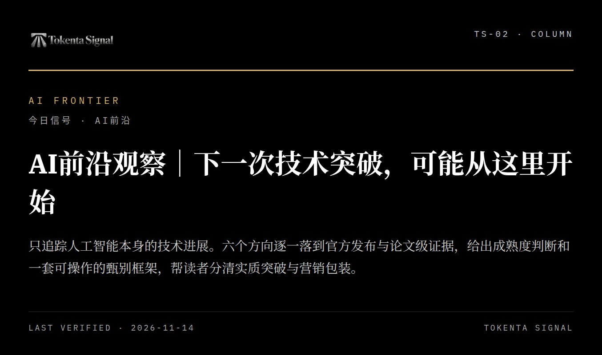
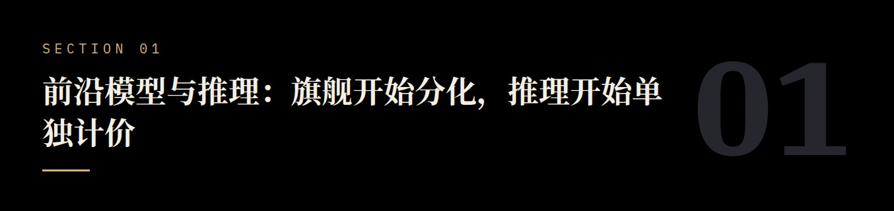
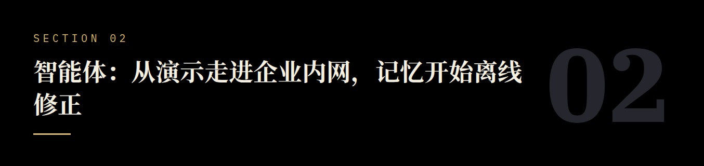
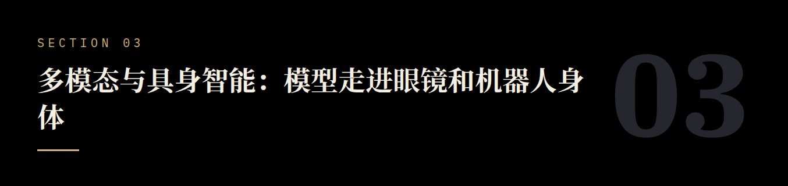
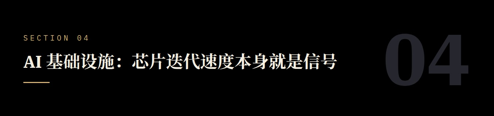
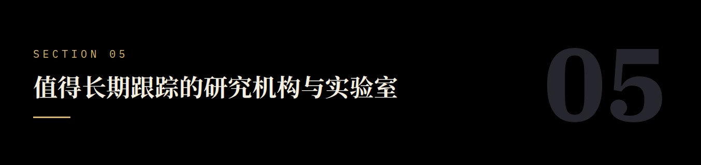
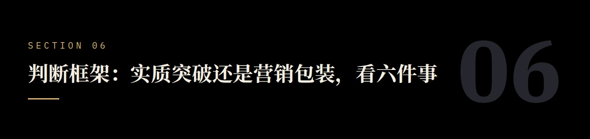
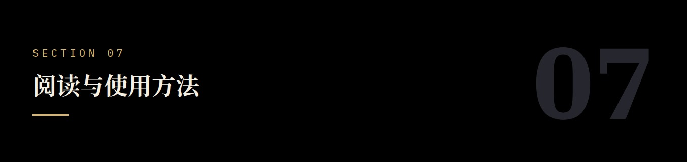

AI 领域每天都有新模型、新参数和新纪录，发布稿的措辞一家比一家强，读者很难判断哪一次发布真的改变了能力边界，哪一次只是换了包装。AI前沿这个栏目只做一件事，追踪人工智能本身的技术进展，把每个方向的代表事件落到官方发布、论文或可复核的实测数据上，再给出成熟度判断和后续观察点。
本栏目与每日信号的分工很清楚。每日信号跨领域挑当天最重要的事件，AI前沿只盯人工智能，按前沿模型、推理与推理成本、智能体、多模态、具身智能、AI 基础设施六个方向持续跟踪。每个方向在本篇都落了一个近期经过核验的真实锚点，读者可以顺着卡片里的原始链接自己复核。

前沿模型的方向变化很明确，同一代模型开始按使用场景和访问权限拆分。Anthropic 在 2026 年 11 月 9 日发布的 Claude Fable 5.2 与 Mythos 5.2 是同一个底层模型，Fable 面向通用用户，Mythos 只开放给已验证机构，输出速度比上一代快约 30%，定价分别为每百万 token 8 美元与 40 美元。模型竞争的重点已经从单一榜单分数，转向同一能力如何分层交付。
推理方向出现了一个值得单独记录的形态变化。谷歌 2026 年 11 月 11 日发布的 Gemini Decisions API 搭载 Gemini Decision 1，这个模型不生成文字，只回答选择题，一次请求可以并行处理最多 1000 道题，返回概率与置信度分数，输出 token 为零。推理被拆成一种可单独购买的决策服务，适合风控、审核、分类这类只需要判断结果的场景，成本结构和通用对话模型完全不同。
Claude Fable 5.2 与 Mythos 5.2
方向 前沿模型 Frontier Models
代表进展 同一底层模型拆成通用版 Fable 5.2 与机构版 Mythos 5.2，2026 年 11 月 9 日发布，输出速度比 5.1 快约 30%
证据来源 Anthropic 官方发布页，定价为每百万 token 8 美元与 40 美元，属于模型服务定价
成熟度判断 已商用发布。分层开放说明能力分级与访问控制正在成为旗舰模型的标准交付方式
后续观察点 机构版与通用版的能力差距是否会公开评测数据，其他实验室是否跟进同模分层
数据来自 Anthropic 官方页面与本号 Issue 197 已核验素材，2026-11-14 复核。
Gemini Decisions API 与 Gemini Decision 1
方向 推理与推理成本 Reasoning and Inference
代表进展 只做决策不写字的模型，一次请求并行回答最多 1000 道题，返回概率与置信度，零输出 token
证据来源 谷歌官方博客 2026 年 11 月 11 日发布，产品名为 Gemini Decisions API
成熟度判断 已开放 API。决策型推理成为独立产品形态，说明推理成本正在按任务类型细分
后续观察点 置信度校准的第三方评测，企业风控与审核场景的实际采用量
数据来自谷歌官方博客与本号 Issue 219 已核验素材，2026-11-14 复核。

智能体的进展要看它能否进入真实生产环境。Anthropic 在 2026 年 11 月 12 日开放自托管 Claude Managed Agents 私测，企业可以在自己的云或本地机房运行完整的智能体服务，沙箱、凭证与会话历史都留在自家防火墙内，模型调用再发给选定的提供方。部署位置曾经是企业采用智能体的最大阻力，这一发布把阻力拆掉了一半，目前仍是私测阶段，开放范围有限。
智能体的另一条线是记忆。Anthropic 2026 年 11 月 6 日的工程文章拆解了 Claude 智能体记忆的四层结构，其中离线做梦机制会拿原文对照修正记忆错误，在 25 题测试中得分从 13% 升到 48%。样本量不大，结论要谨慎，但方向清楚，智能体的可靠性正在从单次对话质量转向长期记忆的准确性。DeepMind 的 AlphaProof Code 是更硬的证据，智能体用四周时间写出超过 600 万行 Lean 证明，验证了 Signal 协议编译代码的安全性质，产出可以被机器逐行检查。
自托管 Claude Managed Agents
方向 智能体 Agentic AI
代表进展 完整智能体服务可部署在企业自己的云或本地环境，沙箱、凭证与会话历史不出防火墙，2026 年 11 月 12 日开放私测
证据来源 Anthropic 官方文档（自托管 Managed Agents 与产品总览），2026 年 11 月 12 日开放私测，本号 Issue 223 已核验
成熟度判断 私测阶段。方向已确认，稳定性与定价要等正式版
后续观察点 私测转正式的时间，企业客户名单，模型调用外发时的合规口径
一手来源已替换为 Anthropic 官方文档页，自托管架构与功能边界以官方文档为准。
AlphaProof Code 验证 Signal 协议
方向 智能体与形式化推理
代表进展 智能体四周写出超过 600 万行 Lean 证明，验证 Signal 协议编译代码的前向保密、认证与泄露后安全等性质
证据来源 Google DeepMind 官方博客 2026 年 11 月 10 日发布，证明产出可由 Lean 逐行机器检查
成熟度判断 研究成果已公开，工程化成本仍高。它的价值在于产出可验证，绕开了口头宣称
后续观察点 同类验证是否扩展到更多安全关键软件，单次验证的算力成本是否下降
数据来自 DeepMind 官方博客与本号 Issue 208 已核验素材，2026-11-14 复核。

多模态的落点正在从手机屏幕走向可穿戴设备。谷歌的智能眼镜 2026 年 11 月 12 日开启预订，12 月 10 日开售，Warby Parker 系列 395 美元起，Gentle Monster 系列 449 美元起，三星为平台合作方，搭载 Gemini，支持实时翻译与导航，首发地区只有美国与韩国。真正值得看的是多模态模型开始以全天佩戴的形态进入日常场景，交互方式从打字提问变成持续感知。
具身智能的关键指标是少样本学习能力。NVIDIA 在 2026 年 11 月 9 日的 CoRL 大会上发布开放世界动作模型 GR00T 2，在 50 项任务上无演示完成 40 项，单次演示平均成功率 71%，5 次演示升到 95%。同一周，Google DeepMind 的 Gemini Robotics 2.5 在奔驰工厂概念验证中做到零件分拣成功率 96%。组织层面还有一个反向信号，OpenAI 在 11 月 13 日解散了独立机器人团队，理由是通用模型已经可以直接驱动机器人。两个方向指向同一判断，机器人能力的瓶颈正在从专用模型转向通用模型的迁移效率。
谷歌智能眼镜，Warby Parker 与 Gentle Monster 两系列
方向 多模态 AI Multimodal AI
代表进展 搭载 Gemini 的智能眼镜 2026 年 11 月 12 日开启预订，12 月 10 日开售，三星为合作方，Warby Parker 系列 395 美元起，Gentle Monster 系列 449 美元起，支持实时翻译与导航
证据来源 谷歌官方博客，两系列售价 395 美元起与 449 美元起为产品售价，首发美国与韩国
成熟度判断 消费级产品已开售在即。续航与隐私口径要等真实用户评测
后续观察点 中国大陆是否进入后续发售名单，开发者能否调用眼镜的感知能力
数据来自谷歌官方博客与本号 Issue 232 已核验素材，2026-11-14 复核。中国大陆不在首发名单，读者暂时无法直接购买。
NVIDIA GR00T 2
方向 具身智能 Embodied AI
代表进展 开放世界动作模型，基于 Cosmos，50 项任务无演示完成 40 项，1 次演示平均成功率 71%，5 次演示 95%
证据来源 NVIDIA 官方博客，2026 年 11 月 9 日 CoRL 大会发布
成熟度判断 研究与平台阶段。少样本数据可复核，离工厂级连续作业还有距离
后续观察点 第三方机器人本体上的复现结果，演示数据成本与传统示教方式的对比
数据来自 NVIDIA 官方博客与本号 Issue 199 已核验素材，2026-11-14 复核。

基础设施决定能力上限，迭代节奏决定竞争格局。谷歌在 2026 年 11 月 9 日发布 TPU 8tx 与 TPU 8i Max，第八代 TPU 在一年内出到第四款系统，8i Max 的算力、SRAM 与内存带宽都是 8i 的两倍，官方把这一代定位为智能体时代的基础设施，价格与上市日期尚未公布。自研芯片一年四款的节奏说明，头部实验室已经把算力供给当作需要自己掌控的变量，云厂商的通用供给排在第二位。本栏目跟踪基础设施只看三件事，官方公布的性能口径、实际供货时间、第三方客户能否买到。
Google TPU 8tx 与 8i Max
方向 AI 基础设施 AI Infrastructure
代表进展 第八代 TPU 一年内第四款系统，8i Max 算力、SRAM 与内存带宽为 8i 的两倍，8tx 面向机密推理与小规模训练
证据来源 谷歌官方博客 2026 年 11 月 9 日，Amin Vahdat 署名
成熟度判断 已发布未定价。性能口径为官方单方数据，等第三方实测
后续观察点 上市日期与定价，外部云客户的可用范围，与同期 GPU 方案的实测对比
数据来自谷歌官方博客与本号 Issue 198 已核验素材，2026-11-14 复核。价格未公布，卡片不做估算。

跟踪 AI 前沿，盯机构比盯新闻标题有效。本栏目固定跟踪五类来源。第一类是前沿实验室，Anthropic、OpenAI 与 Google DeepMind 的官方博客和研究页面，它们的发布密度与本篇锚点一致。第二类是平台型研究机构，Meta 的研究博客与 NVIDIA 的技术博客，前者近期发布了面向智能体重复执行的低成本小模型 Muse Ember，后者同时握有机器人模型与算力两条线。第三类是中国实验室，DeepSeek 把消费级应用背后的搜索、文件解析与安全检查整套能力开放成 API，是观察中国团队产品化速度的样本。第四类是学术会议与论文渠道，CoRL 这类机器人会议往往比新闻稿更早出现可复核数据。第五类是独立评测与工程博客，它们提供厂商不会主动公布的失败案例与成本数据。

第一看证据类型。官方发布页给出的参数是宣称，论文或可机器检查的产出是证据，第三方在相同任务上的复现是强证据。发布时只有渲染图和形容词、没有任务定义与测试条件的，默认按营销处理。第二看基线与失败案例。可信的发布会写清和谁比、测试集是什么、失败率多少，只报成功率不报任务总数的要打折。GR00T 2 公布了 50 项任务的总数与分档成功率，这种写法就经得起追问。
第三看成本曲线。能力提升如果伴随价格数量级上升，商业意义要重估，反过来，Meta 的 Muse Ember 把执行类模型价格压到每百万 token 输入 0.10 美元、输出 0.50 美元，这种降价本身就是技术信号。第四看是否进入真实工作流，有没有具名客户、真实部署环境与持续运行时间，私测与概念验证要如实标注阶段，不能写成已经普及。第五看限制披露，地区限制、访问门槛、未公布的价格与日期都要写进判断，藏着限制条件的发布，可信度自动降一档。第六看时间检验，本栏目对每个锚点都留了后续观察点，三个月后回看承诺兑现了多少，比发布当天的热度可靠得多。

01 先看每个方向的卡片，用代表进展与成熟度判断快速定位自己关心的领域，再顺着卡片里的官方链接读原文。
02 判断一条 AI 新闻的成色时，直接套用本篇第六节的六项框架，证据类型与限制披露两项最容易筛掉包装型发布。
03 本栏目按方向持续更新，旧锚点的后续观察点会在新文章里回访，读者可以按时间线对照承诺与兑现情况。

SOURCES · 来源与核验
[1] Anthropic：Claude Fable 5.2 and Mythos 5.2 官方发布
[2] Google：Gemini Decisions API 官方博客
[3] Google：TPU 8tx and 8i Max 官方博客
[4] Google DeepMind：AlphaProof Code 官方博客
[5] NVIDIA：GR00T 2 与 CoRL 机器人进展官方博客
[7] Anthropic：The components of agent memory 工程文章
[8] Anthropic 官方文档：Managed Agents 自托管与产品总览
LAST VERIFIED · 2026-11-14
TOKENTA SIGNAL
Extracting signals from the noise. 本栏目内容来自公开来源并标注核验日期，不构成任何投资建议。
signal.tokenta.space · team@tokenta.space